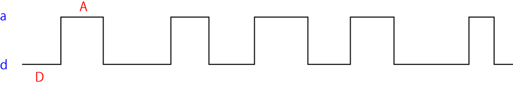

ランダム過程における自己相関関数について-01
ランダム過程

図のように，A状態（値a）とD状態（値ｄ）をランダムに遷移する過程を考えていきましょう．
今回は，この波形の自己相関関数がどの様になるか？，を計算していきます．
このときの反応式は，
\(\hspace{ 18pt } k_{-} \\[-5 pt] \Large A \rightleftharpoons D \\[-5 pt] \hspace{ 18pt } k_{+} \)
と表すことができます． この関数，f(t)の自己相関関数，<f(t)f(t+τ)>，がどのようになるかを考えます．
反応式
まずは，反応式を解いてみましょう．
\(\hspace{ 18pt } k_{-} \\[-5 pt] \Large A \rightleftharpoons D \\[-5 pt] \hspace{ 18pt } k_{+} \)
この反応式は以下の微分方程式で表すことができます．
\(\Large \frac{dA[t]}{dt} = -k_{-} \cdot A[t] + k_{+} \cdot D[t] \)
ここで，
\(\Large A[t] + D[t] = 1\)
とすると，
\(\Large \frac{dA[t]}{dt} = -k_{-} \cdot A[t] + k_{+} \cdot （１-A[t]) \)
定常状態を考えると，
\(\Large \frac{dA[t]}{dt} = 0 \)
\(\Large 0 = -k_{-} \cdot A[t] + k_{+} \cdot （１-A[t]) \)
\(\Large (k_{+} + k_{-}) \cdot A[t] = k_{+} \)
\(\Large A[t] = \frac{k_{+}}{k_{+} + k_{-}} \equiv P_0 \)
となります．また，
\(\Large \frac{k_{+}}{k_{+} + k_{-}} \equiv \tau \)
とすると，
\(\Large \frac{dA[t]}{dt} = k_{+} - (k_{+} + k_{-}) \cdot A[t] \)
\(\Large \begin{eqnarray} \tau \cdot \frac{dA[t]}{dt} &=& \tau \cdot k_{+} - A[t] \\
&=& P_0 -A[t]
\end{eqnarray} \)
となります． この式の意味は， A状態にいる割合 を示す． もちろん初期状態に依存します．
次ページに，自己相関の求め方，さらには，A状態（値a）とD状態（値ｄ）のa, d, の値を具体的に設定して計算してみましょう．